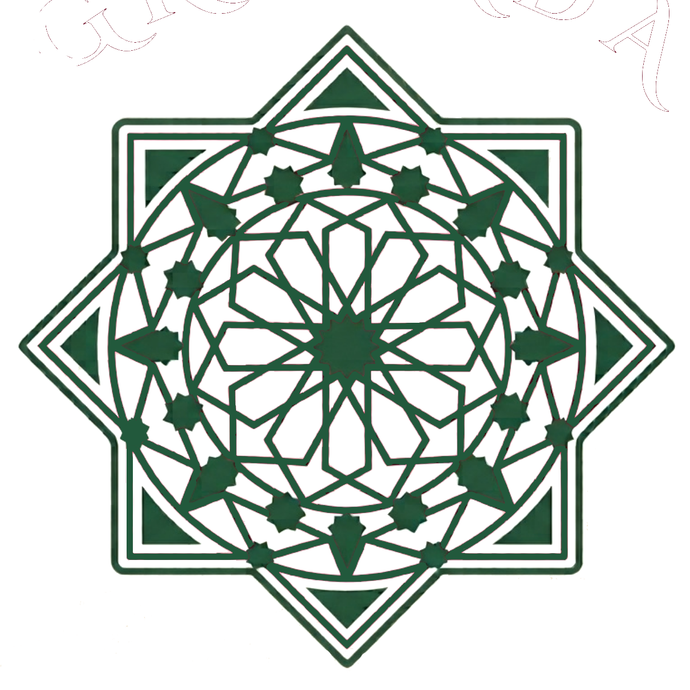

Beiro
Zona céntrica y vibrante que destaca por su dinamismo estudiantil y residencial, con barrios tradicionales llenos de vida y tradición gastronómica

RUTA - PATRIMONIO
Monasterio de la Cartuja
Es la joya de la corona del distrito. Aunque su contrucción comenzó en el siglo XVI, es mundialmente conocido por su deslumbrante decoración barroca...
Leer más>>RUTA - PATRIMONIO
Hospital Real
Este monumental edificio fue mandado construir por los Reyes Católicos a principios del siglo XVI como un hospital para pobres y peregrinos. Su arquitectura mezcla con elegancia...
Leer más>>RUTA - PATRIMONIO
Plaza de Toros de Granada
Inaugurada en 1928, esta monumental plaza destaca por su inconfundible estilo neomudéjar, reflejado en sus vistosos arcos de herradura y su fachada de ladrillo. Más alla de...
Leer más>>RUTA - NATURALEZA
Jardines del Triunfo
Este histórico parque urbano se asienta sobre lo que antiguamente fue un cementerio musulmán y, más tarde, el lugar donde se ubicaba la antigua Real Chancillería. Hoy en día es un...
Leer más>>